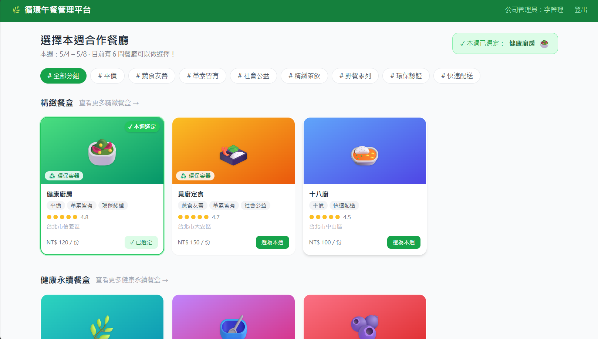
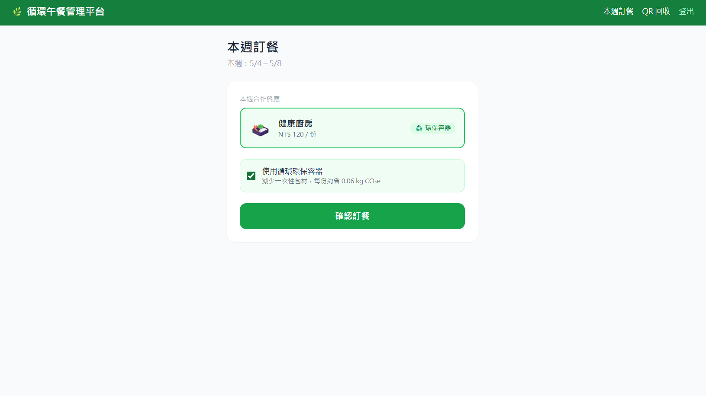
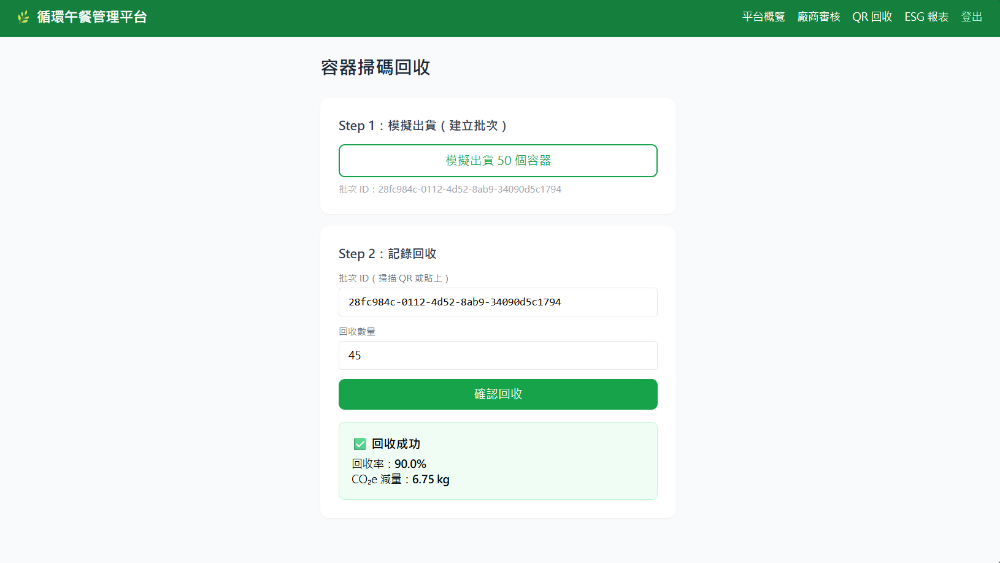
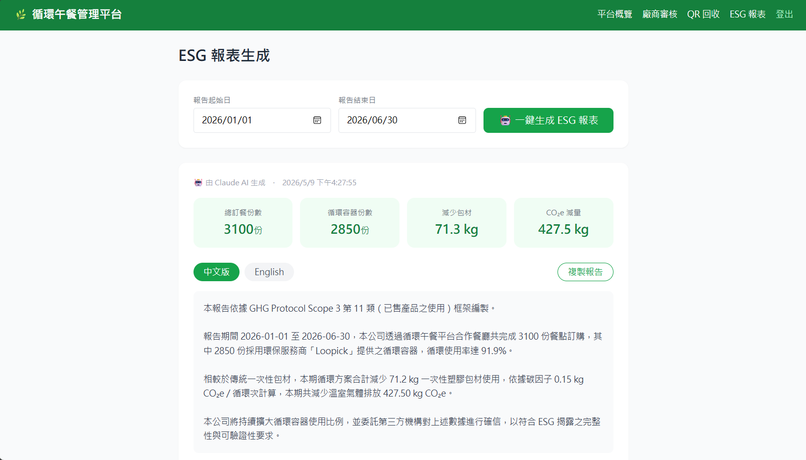
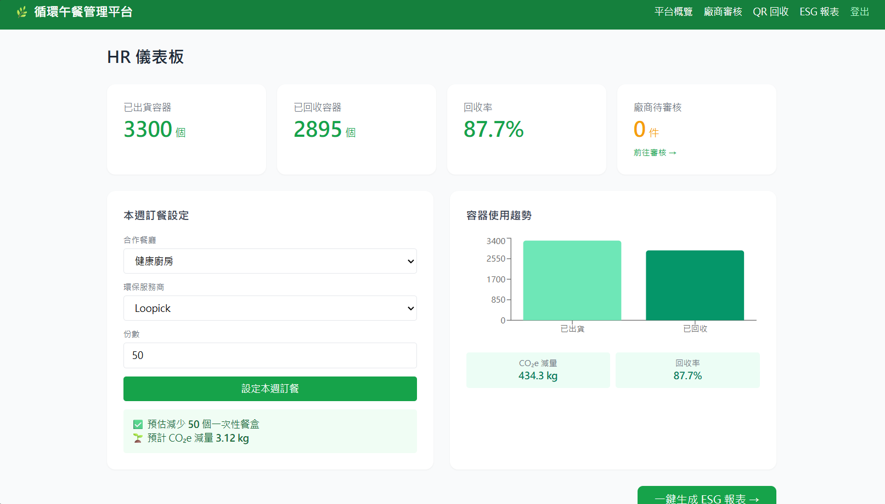

企業不是不想減少一次性餐具，而是缺乏方便導入、方便管理、能夠認證的系統
循環餐具服務商與企業之間缺乏數位橋接，採購、追蹤流程靠人工效率低落。
企業想用卻不知道從哪裡開始，服務商也沒辦法輕鬆入駐管理。
容器出貨後不知道在哪、回收率多少，全靠感覺估算。
管理人員無法即時掌握每日實際回收狀況，異常容器流失難以察覺。
每次 ESG / Scope 3 報告都要手工整理資料，成本高且易出錯。
現有資料零散、格式不一，整理一份報告往往需要數天時間。
第三方 B2B 平台，連結企業、餐廳與循環餐具服務商 — 員工無需改變使用習慣




不只是一個新的環保餐具物流，而是建立讓企業真正導入、管理、認證循環價值的系統
